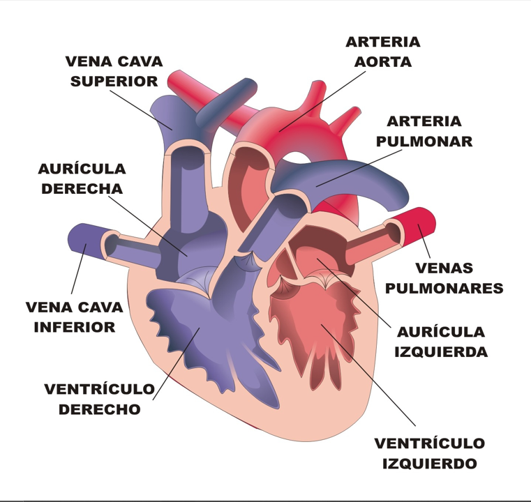

| CARACTERÍSTICAS DEL CORAZÓN | |
• El corazón está situado en el tórax por detrás del esternón y delante del esófago, la aorta y la columna vertebral, y en ambos lados están los pulmones. Además, su tamaño aproximado es de un puño. Este está compuesto de tejido muscular, sangre, arterias, venas, cuatro cavidades (dos aurículas y dos ventrículos), válvulas. |
 |